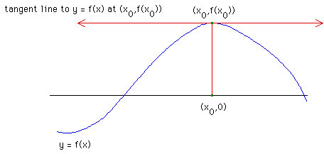

The most obvious problem with Newton's method is that a bad initial guess might lead to a horizontal tangent line. Thus the tangent line will never intersect the x-axis, and Newton's method will not generate another point.
|  |
Return to Complex Newton's Method